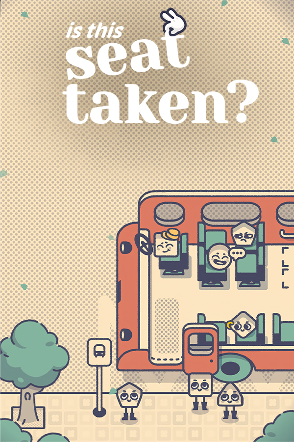

Is This Seat Taken?
Every archived year-end list appearance, including placement and points earned.
About the Game
Window seat or aisle? Booth or table? Lone wolf or life of the party? In Is This Seat Taken?, your mission is to organize groups of people according to their preferences. It’s a cozy, no-pressure logic puzzle game where you’re in charge of who sits where.Whether it’s the cinema, a crowded bus, a wedding reception, or a cramped taxi cab, every setting introduces new characters with specific tastes. A party guest with a sensitive nose won’t be happy sitting next to a stranger who’s wearing too much cologne. A sleepy passenger won’t be happy trying to nap on the bus next to someone listening to loud music. It’s all about reading the room to find the perfect placement!Nat is an aspiring actor whose world gets turned upside down when they see a shape just like them on the big screen. This discovery sends Nat on a global journey to meet their hero and figure out how to fit in. Experience Nat's heartfelt story as you travel from city to city, each with its own levels, characters, and charm.Play seating matchmaker to please picky characters.Discover each character’s unique traits—relatable, outlandish, and everything in between.Piece together satisfying puzzles with no timers or leaderboards.Unlock fun new scenarios as you progress—from bus rides to banquets!
| Released | 2025-08-06 |
|---|---|
| Developer | Poti Poti Studio |
| Publisher | Wholesome Games Presents, Poti Poti Studio |
| Genres | Casual, Indie |
| Platforms | Linux, macOS, PC |
SingleplayerSteam AchievementsFull controller supportSteam CloudAtmospheric2DFunnyPoint & ClickFamily FriendlyCuteColorfulRelaxing
Game information provided by RAWG.
Points by Year
List History
| Year | Source | List | Placement | Points |
|---|---|---|---|---|
| 2025 | Polygon | The 50 best games of 2025, as chosen by Polygon | 46 | 1 |
| 2025 | SUPERJUMP | 50 Outstanding Games Released in 2025 | Unranked | 1 |